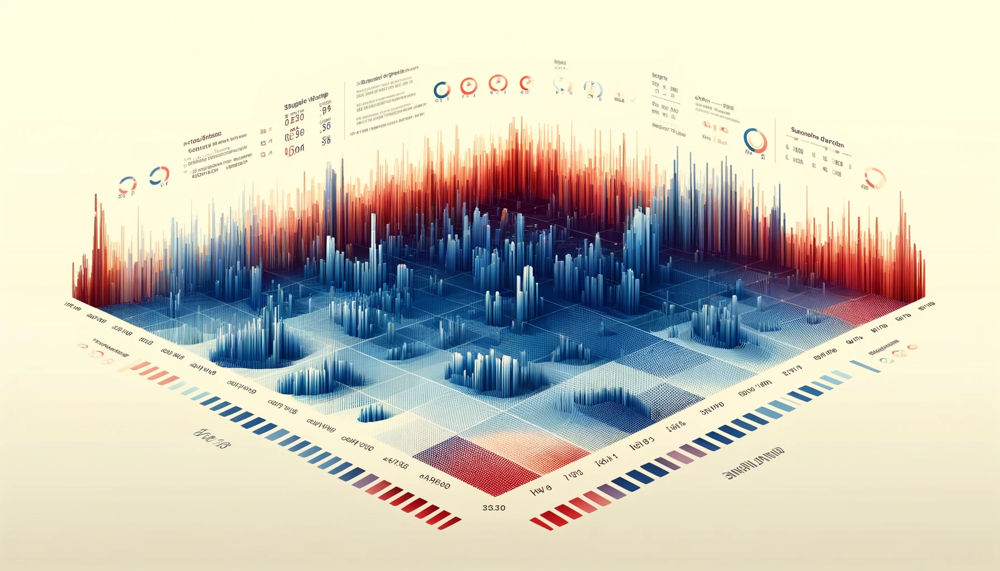

Análise de Risco
Sporting CP vs SC Braga
08/05/2024
Recinto Desportivo
Designação: Estádio X
Capacidade: 50466
Nível da Infraestrutura: 1
Nível de acessos: 2
Débito de evacuação: 5000px/min
Outras Informações:
Heatmap
Risco adeptos
Adeptos visitado: 3
Adeptos visitante: 4
Entre adeptos: 5
Marcas HTML adicionais usadas:
- Marca <div> para agrupar conteúdo dentro de <main> e dentro de elementos individuais, para facilitar a estilização e script.
- Marca <h1> para o título principal da página "Análise de Risco".
- Marca <img> usada para inserir imagens no documento, como ícones de tempo, ícones de temperatura e fotografias do estádio, com o atributo alt para melhorar a acessibilidade.
- Marca <span> para destacar e separar elementos específicos dentro dos parágrafos, como níveis e valores específicos em <p>.
- Marca <strong> utilizada para enfatizar texto dentro de parágrafos, realçando informações importantes.
Propriedades CSS adicionais usadas:
- display: Usado para definir o tipo de exibição dos elementos. O valor 'flex' visou facilitar (nem sempre foi conseguido) o design responsivo e a alinhamento dos itens dentro dos containers criados.
- flex-direction: para controlar a direção dos itens flex, aqui definida como 'column' para organizar os elementos verticalmente dentro dos cointainers.
- align-items: para alinhar itens ao longo do eixo transversal do container.
- justify-content: para alinha itens ao longo do eixo principal do container. 'Space-between' tentou permitir que os itens se distribuam igualmente com espaço entre eles, e 'center' centraliza os itens dentro de seus cointainers.
- padding-top: Adiciona um espaçamento no topo do elemento .content para separar visualmente o conteúdo do topo da página.
- min-height: Define a altura mínima de .content como a altura da viewport menos 170px, ajustando dinamicamente o espaço vertical que o elemento ocupa baseado no tamanho da tela. Serviu também para equilibar a localização do footer
- object-fit: Especifica como a imagem deve ser redimensionada para se ajustar ao seu container, com 'contain' garantindo que toda a imagem seja visível sem distorção.
- height: Usado em conjunto para definir a altura total da página, garantindo que preenche toda a altura da viewport.
- transform: para aplicar uma rotação ao ícone da temperatura em 90 graus.
- box-sizing: Altera o modelo de caixa CSS padrão usado para calcular larguras e alturas dos elementos para que inclua qualquer padding e border nos valores de largura e altura especificados.
- border: para aplicar uma borda ao redor de certos elementos para definir limites visuais.
- flex: definir a proporção de espaço que cada item tomará dentro de um container flex, com '1' permitindo que os itens cresçam para ocupar o espaço disponível proporcionalmente.
- max-width: controlar a largura máxima de determinados elementos para garantir que eles não se estendam além de um certo ponto, mesmo que haja espaço disponível.
- margin-top: Usado nas etiquetas label para criar um espaço vertical entre eles e os elementos acima, melhorando a clareza visual.
- width: Controla a largura dos campos, garantindo que eles ocupem quase todo o espaço disponível dentro dos containers, menos 20px para o padding.
- border: Define a aparência das bordas dos campos de entrada e botões. Para os campos de entrada, é aplicada uma borda sólida para delinear claramente o campo. Os botões têm a borda removida para um design mais limpo.
- @media (max-width): Usado para criar regras de estilo específicas para diferentes tamanhos de tela, garantindo que a página seja responsiva e funcional em dispositivos de variados tamanhos.
- flex-direction: Modifica a direção dos itens dentro do .container para 'column' em telas menores, empilhando os conteúdos verticalmente para melhor adaptação a telas estreitas.